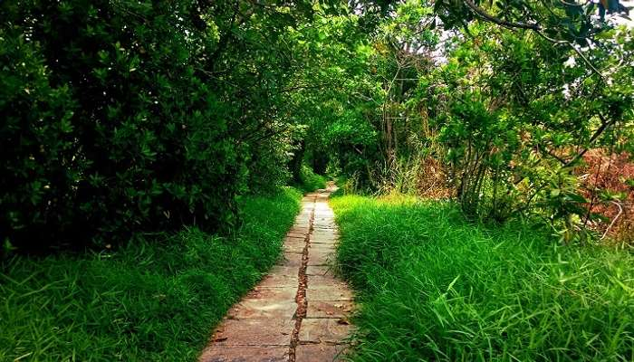

Places to visit in Kottayam
Kottayam is blessed with nature’s bounty in abundance. It is the pride of God’s own country with its beautiful churches, charming nearby hill stations, significant temples, and refreshing waterfalls. The Western Ghats and the backwaters add to the beauty to this undisturbed, rustic town of Kerala. The numerous plantations – rubber, coconut, palm, spices and the flora make for lush green landscapes that are totally stunning. All these factors, aside from it being strikingly beautiful, make it as one of the must visit destinations in Kerala.
- Vaikom
- Nadukani
- Island Of Pathiramanal 
- Nattakom & Panachikkad
- Marmala Waterfalls

Vaikom is one of the popular places around Kottayam mainly due to its variety of tourist attractions. It is home to some of the most scenic backwaters of Kerala like Kumarakom and houses rich historical places and heritage temples that add an old-world charm to it. Its serenity and simplistic beauty are unbeatable. If you are looking for some ‘me or us’ time, Kottayam is littered with several secluded, yet calming haunts where you can let sit back and simply enjoy the view.
Location: Kottayam, Kerala

Nadukani is one of the popular hill stations near Kottayam and is a major picnic spot. Nadukani offers wonderful views of the landscapes covered in dense forests, Nilgiri mountains, Muvattupuzha river, mystical valleys, and colourful flora. One of the popular tourist places near Kottayam, Nadukani has emerged as the new go-to spot for youngsters and couples looking for refuge. Take buses or private taxis to reach Nadukani from Kottayam. In the end, the trip would be truly worth it.
Location:Kottayam, Kerala 686001
Located in the popular Vembanad Lake, this quaint island is one of the most fascinating islands in Kerala. The journey to reach the striking island is one of the most mesmerizing ones complete with sights of rare birds, swaying coconut palms, and whispering waters. It is one of the best tourist spots in Kottayam.
Location:Muhamma, Kerala 688555

Two of the most offbeat places to visit in Kottayam, Nattakom and Panachikkad are the secluded villages located mere few kilometres from the main city. These villages are known for their scenic landscapes, migratory birds, and remarkable reservoirs.
Some of the best temples in the area are based in these villages. Villages of heritage as well as religious importance, Nattakom and Panachikkad are must-visit places near Kottayam. Visit them if you’re looking for a secluded desi getaway in the midst of nature and its warm natives.
Location:Kottayam, Kerala

Located in Erattupetta near Kottayam, Marmala waterfall is one of the places to visit if you’re looking for some adventure. It’s difficult to reach the waterfalls as only jeeps can traverse the narrow trodden paths.
However, all the hardship is worth the sweat for the adventure-seeking tourists. The difficult journey adds to the overall charm of these mystical falls. The beauty and the calm make up for the dangerous paths, it is also one of the best waterfalls near Kottayam to visit.
Location:Marmala Rd, Vellani, Erattupetta, Kerala 686580